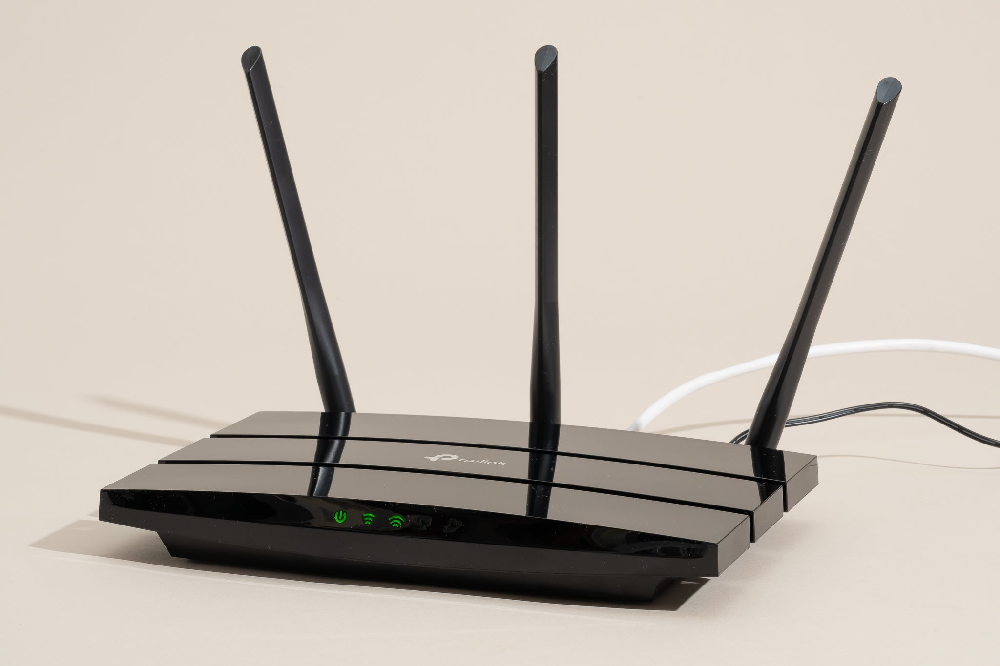
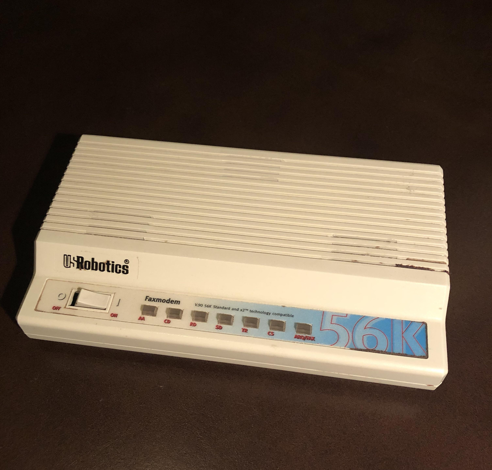
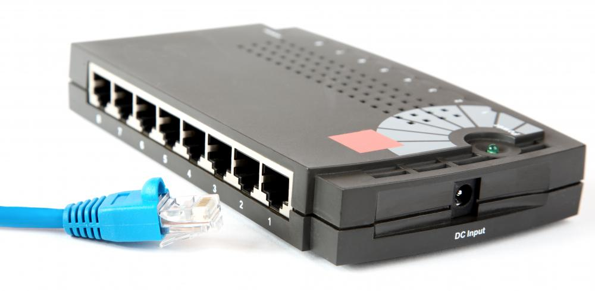

Hardware in Internet
Routers
In simple terms what a router would do is connect devices to the internet, It can connect these devices to networks and other smaller sub-networks A Router has two primary functions to manage traffic between these networks by forwarding the data packets to their intended IP addresses, and allowing multiple devices to use the same Internet connection.

Servers
A server is a computer program and or device that provides a service to other computer programs and its user, they can also be known as clients. In a data center, the physical computer that a server program runs on is ushually referred to as a server.

Modem
A modem is a device that connects your home, usually through a coax cable connection, to your Internet service provider. The modem takes signals from your ISP and translates them into signals that your local devices can use, and vice versa.

Bridge
A bridge is a type of computer network device that provides interconnection with other bridges that use the same protocol. A bridge works at the data link layer of an Open System Interconnect model, connecting two different networks together and providing communication between them.